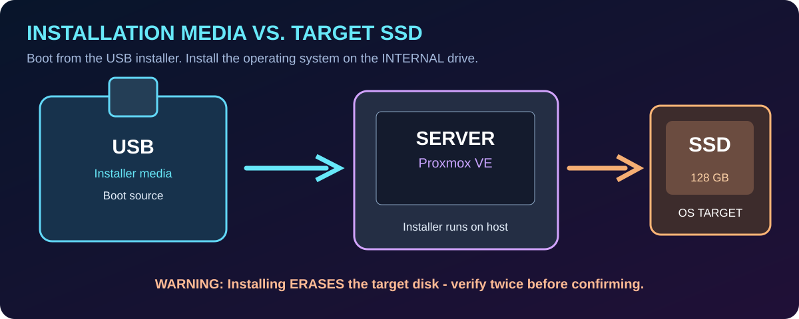

Follow a technician's workflow from firmware and boot media to safe disk selection, management IP configuration, and first browser login. Simulator first; instructor-approved installation second.
Pass requires a full name, all 9 guided tasks, all 7 installer stages, and at least 80% on the six-question assessment. Physical verification is recorded separately.
These are classroom example values. Change them if your assigned lab uses a different address plan.

The removable USB starts the installer. The internal SSD is the destination. The USB is removed after installation. Disk sizes in the simulation are example values; actual device names vary.
Read the action and explanation, then attest when completed. These checkboxes record student progress, not automatic hardware proof.
Complete each stage in order. The simulated installer checks your choices and displays explanations when something is incorrect.
Choose one answer for each question. The quiz is worth 100% of the knowledge score; installer stage verification and guided tasks are separate pass requirements.
Instructor-authorized work only. A checkmark is a student's report of completion; the instructor should inspect the actual system.
Do not record root passwords, private keys, or other credentials in the PDF.
Print preview shows only your signed-off work order and assessment. Use your browser's “Save to PDF” destination for Canvas submission.
Student: Date: Node:
Knowledge score: Lab status: Simulation:
Actual URL:
Actual installed disk:
Student evidence / notes:
The simulator records browser-local results only. Student checked items are not independently verified. Instructor must authorize and check any physical installation.
Created by Mr. Beaird